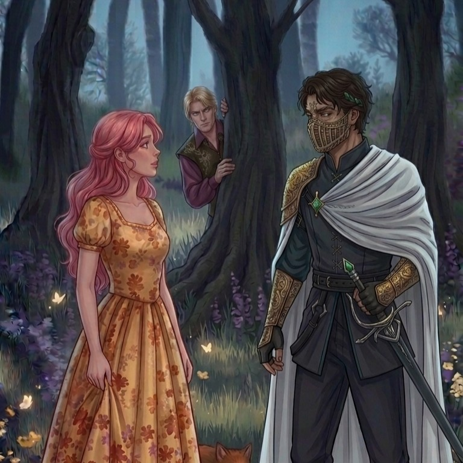
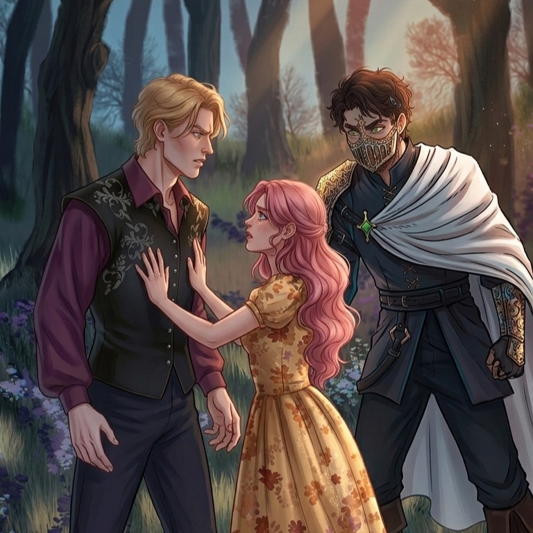

Jacks da Grota parte para cima de Castor Valor após vê-lo perto de Evangeline

VALORFELL — Uma discussão terminou em confronto nesta semana depois que Jacks da Grota encontrou Castor Valor conversando com Evangeline. O episódio chamou atenção não apenas pela intensidade da discussão, mas principalmente pela reação de Jacks, que demonstrou uma hostilidade incomum ao ver o imortal próximo dela.
Segundo testemunhas, Evangeline conversava tranquilamente com Castor quando Jacks apareceu no local. A princípio, ele teria permanecido alguns metros distante, observando os dois em silêncio.
O clima teria mudado quando Castor se aproximou ainda mais de Evangeline.
Uma testemunha afirmou que Jacks teria ficado "completamente imóvel" por alguns segundos antes de caminhar até os dois.
"Fique longe dela"
Jacks teria interrompido a conversa sem explicar o motivo.
"Você. Fique longe dela."
Evangeline teria ficado confusa com a reação.
"Jacks, ele só estava conversando comigo."
Segundo pessoas próximas, Jacks teria ignorado completamente a explicação e mantido os olhos fixos em Castor.
Castor, aparentemente tranquilo, teria perguntado:
"Você tem algum problema comigo?"
Jacks teria dado um sorriso breve antes de responder:
"Tenho vários."

Confronto surpreende Evangeline
A discussão teria aumentado rapidamente. Castor teria questionado por que Jacks estava tão determinado a mantê-lo longe de Evangeline.
Jacks, entretanto, não teria revelado o verdadeiro motivo.
Pessoas próximas afirmam que ele sabe exatamente o que Castor fez com Evangeline no passado, enquanto ela própria desconheceria toda a extensão da história.
Para Jacks, permitir que Castor se aproxime novamente dela seria uma das poucas coisas capazes de fazê-lo perder completamente a paciência.
Castor teria dado mais um passo na direção de Evangeline.
Foi nesse momento que Jacks teria perdido a calma.
Após um breve confronto físico, os dois foram separados antes que a situação pudesse piorar.
A ameaça que deixou todos em silêncio
Segundo testemunhas, Castor teria provocado Jacks perguntando o que ele faria caso continuasse se aproximando de Evangeline.
Jacks teria se aproximado e respondido em voz baixa:
"Eu só não te mato porque você é imortal."
A frase teria feito o ambiente inteiro ficar em silêncio.
Evangeline, sem entender a gravidade da ameaça, teria perguntado:
"Por que vocês dois se odeiam tanto?"
Jacks teria olhado para ela durante alguns segundos.
Em vez de responder, teria apenas dito:
"Você não precisa saber, Raposinha."
Castor não recua
Apesar da ameaça, Castor teria permanecido no local. Segundo testemunhas, ele aparentava estar mais divertido do que preocupado com a situação.
"Se ele realmente quisesse me matar, já teria tentado", teria provocado Castor.
Jacks teria respondido imediatamente:
"Não confunda paciência com misericórdia."
Evangeline teria interrompido os dois antes que uma nova discussão começasse.
Irritada, ela teria afirmado que não era propriedade de nenhum dos dois e que decidiria sozinha com quem queria conversar.
Jacks teria concordado, embora testemunhas afirmem que sua expressão dizia exatamente o contrário.
O segredo continua
Após o incidente, Evangeline teria perguntado novamente a Jacks por que ele demonstrava tanta aversão a Castor.
Ele, porém, teria se recusado a explicar.
"Raposinha... Um dia você vai entender."
Sem saber que existe uma história muito mais sombria entre os dois, Evangeline teria deixado o local acreditando que a discussão havia sido apenas mais uma demonstração exagerada de ciúmes de Jacks.
Castor, por outro lado, teria permanecido observando Jacks de longe.
Segundo uma testemunha, antes de ir embora ele teria dito:
"Você ainda está tentando protegê-la de mim."
Jacks não respondeu.
Apenas continuou olhando para ele até que Castor desaparecesse de vista.
Para Evangeline, foi apenas uma briga. Para Jacks, porém, Castor voltar a se aproximar dela pode significar que o passado está prestes a se repetir.